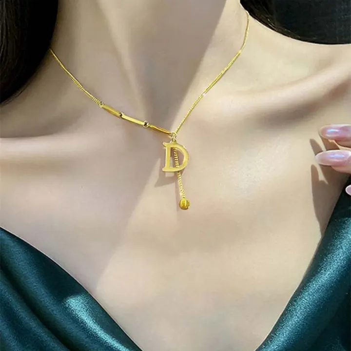

K金與純度標記：24K、18K、14K 怎麼分
K 是「卡拉」的縮寫——24K 是純金，18K 是 75% 金——看懂 K 數，就看懂金飾的一半。

核心定義
K（Karat）是黃金純度單位：24K＝純金（99.9%）、18K＝75% 金（18/24）、14K＝58.5% 金（14/24）——K 數越高，含金量越高。剩下的比例是合金金屬（銅、銀、鋅等）——它們決定顏色與硬度。
為什麼不做純金首飾？純金（24K）太軟——變形、刮傷、掉石。18K（硬度提高）是珠寶主流、14K 更硬更耐磨——「K 金」是「純度與實用性」的平衡。
特徵與分類
| K數 | 含金量 | 特性 | 用途 |
|---|---|---|---|
| 24K | 99.9% | 純軟 | 金條/收藏 |
| 18K | 75% | 硬度佳 | 珠寶主流 |
| 14K | 58.5% | 硬耐磨 | 日常飾品 |
| 9K | 37.5% | 最硬 | 歐美平價 |
18K 是珠寶的主流之選：75% 金保證價值、25% 合金提供硬度——鑲嵌（鑽石/彩寶）安全、日常佩戴耐用。顏色多樣：18K 黃金、18K 玫瑰金（加銅）、18K 白金（加鈀/鎳，鍍銠）。
科學原理
合金的科學：純金（24K）的金屬鍵柔軟——加入銅銀後，晶格扭曲、硬度提升。玫瑰金的紅來自銅（比例高則紅）、白金的白來自鎳/鈀（多鍍銠增白）。K 數與顏色是「配方」的結果。
成色標記：各國法規要求金飾印記（18K、750、AU750 等）——印記是品質的法定承諾。但印記可偽造——高價交易仍要專業檢測（XRF、火試金）。
鑑定與鑑別方法
- 看印記：24K/18K/14K、750/585
- 掂重量：金重
- 磁鐵測試：金不吸磁
- 酸測試：不同K數反應不同
- 專業檢測：XRF 光譜
市場行情與保養建議
行情：K 金首飾價格＝黃金含量（按國際金價）＋工藝費——18K 的「金價值」占大頭，工藝費是溢價。投資選 24K（低溢價），佩戴選 18K（硬度與設計）。
選購：確認 K 數印記與工藝費明細；18K 玫瑰金與白金的鍍層（銠）需定期重鍍保養——「白色」是鍍出來的。
常見誤區
18K 是 75% 黃金的國際標準合金——「K 金」不是假金，是「黃金與合金的工程」。全球珠寶主流就是 18K。
18K 白金是黃金合金（75% 金鍍銠），鉑金是純元素（Pt950）——成分、純度、價格都不同。名字像，本質不同。
冷知識
古代用角豆樹種子當砝碼稱金（重量驚人地均勻）——「Karat」一詞源自一種豆子的名字。
18K 玫瑰金的紅來自銅——銅比例越高越紅。顏色的配方，是冶金學的藝術。
反直覺觀點
純金太軟——18K 才是珠寶的「實用頂點」。純度最高 ≠ 佩戴最好，工程平衡勝過純度崇拜。
印記代表品質，但可偽造——低價「18K」可能是鍍金或低 K 數冒充。印記要看，檢測更要做。